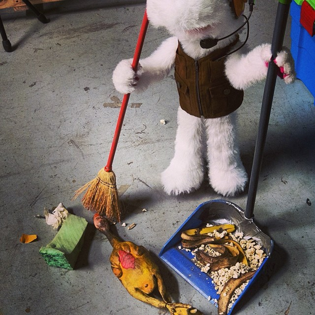

Hola. Soy Juanín. Esta será mi última y aburrida transmisión. Agradezco de corazón a mis fieles 3 seguidores y a todos aquellos que confiaron en mí :(.
Terminando de barrer

Hola. Soy Juanín. En esta foto salgo yo barriendo. Hay que barrer el estudio todas las noches o si no se pone feo. También la clasifico por nivel de reciclabilidad y orden alfabético a petición de Tulio. Anoche fue particularmente especial porque celebraron la víspera del día viernes y tuve que ordenar mucha basura, como palomitas de maíz pelusas, botellas, pollos de goma, cáscaras de plátano. ¡Hasta encontré un ojo de vidrio! Fue muy divertido xD.
¡La nota que hice para el programa!
Hola. Soy Juanín. Esta es una nota que hice hace muchos años cuando todo el resto del equipo se tomó el día libre :o. Creo que fue una gran nota, aunque el resto del equipo no opina lo mismo. Fue una linda experiencia en la que aprendí mucho de periodismo. Ojalá se vuelva a repetir :).